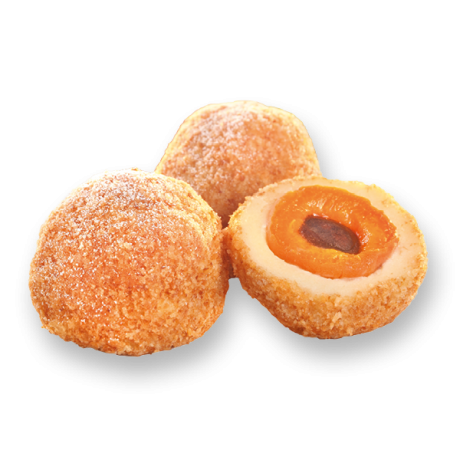

50 g Butter und das Ei gut verrühren und den Topfen untermengen. Mehl, eine Prise Salz und Grieß dazugeben und verkneten. Den Teig etwa 20 Minuten rasten lassen.
Die Marillen entkernen und mit einem Stück Würfelzucker füllen.
Aus dem Teig eine Rolle formen. In 8 Stücke teilen. Jedes Teigstück in der bemehlten Handfläche flach drücken. Eine Marille in die Mitte setzen, den Teig darüber hüllen und Knödel formen. Die Knödel in kochendes Salzwasser legen und ca.10 Minuten ziehen lassen.
Inzwischen 2 El Zucker in 50 g Butter leicht karamellisieren lassen. Die Brösel dazugeben und unter ständigem Rühren goldbraun rösten. Mit Zimt würzen.
Die gut abgetropften Knödel in der Butterbröselmischung wälzen. Mit Puderzucker bestreuen.
